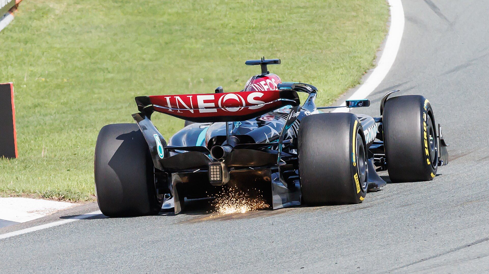

F1 · MotoGP · NASCAR · WEC
Every series.
One feed.
Pace & Publish: verified motorsport news in our own words, from every series' official source.
Mercedes-AMG Petronas, 2024 Dutch Grand Prix (file photo) · Photo: Steffen Prößdorf · CC BY-SA 4.0 · Wikimedia Commons (links open in a new tab)
Editorial standards
Confirmed facts.
Our own words.
No favorites.
-
Official sources only
Every story is checked on the series' own website, and names its source and date.
-
No rumors as facts
Anything unconfirmed is labeled as a rumor. We never predict a session, race or championship.
-
No favorites
We report what happened without taking sides, so no team, driver or series gets extra emphasis.
Browse by series
Four series
Interactive
Explore the circuits
Discover the tracks behind motorsport.
My Racing Dashboard
Your racing. Your way.
Choose the series you follow and build your own motorsport feed.
Choose your series
Select any combination. Selected series are filled red with a check mark, and your choice is saved on this device.
Race calendar
Upcoming events
Verified event weekends from each series' official website.
05 About
About Pace & Publish
Fans who follow more than one racing series usually check several websites and apps to stay current. Pace & Publish brings F1, MotoGP, NASCAR and WEC together in one place.
We write for fans who catch up first thing in the morning or after work, with every series in one feed instead of across several apps.
Our story and standardsAuthentic
Every caption is in our own words. We never copy or lightly reword another outlet's article.
Professional
We report what happened without taking sides, and never show a favorite team or driver.
Intriguing
Each post leads with a fact that gives fans a reason to open it.
From our Instagram
Our launch posts, as they appear on @paceandpublish.